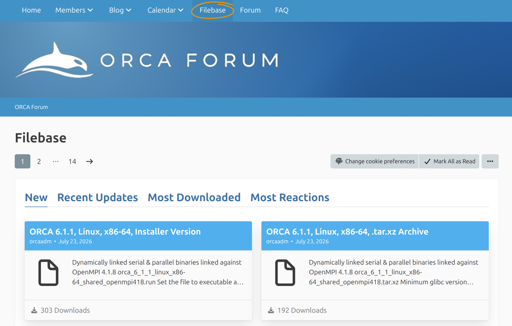

Installing ORCA¶
ORCA is distributed as precompiled packages for Linux, macOS, and Windows.
This tutorial shows how to choose the correct ORCA 6.1 package, install it,
make the orca command available, and verify the installation with a small
calculation.
Important We generally recommend using the latest available version of ORCA. Please check regularly for bug-fix releases and update your ORCA installation accordingly.
Before you Start¶
You need:
- a supported Linux, macOS, or Windows system;
- permission to install software in your user account or the selected installation directory;
- a terminal on Linux or macOS, or PowerShell/Command Prompt on Windows.
A separate graphical user interface is not required. ORCA itself is a command-line program.
Register for Download¶
ORCA can be downloaded either from the ORCA Forum (academic) or from the FACCTs downloads area (academic and commercial). For both, you have to create an account and agree to the respective license agreements. In the following we will describe the installation process based on the ORCA Forum.

ORCA Forum registration.
Download ORCA¶
After registration and login at the ORCA Forum. Open the Filebase and select the newest ORCA version release version matching your infrastructure requirements.

ORCA Forum Filebase (Download section).
On Linux and macOS, the installer is normally a .run file. On Windows, the installer is provided inside a .zip archive.
Note If you only want to test ORCA or run serial calculations, begin with the standard installation. Parallel calculations require additional components and are covered in Running a Calculation in Parallel.
Install ORCA¶
Choose the instructions for your operating system.
Linux¶
- Open a terminal and change to the directory containing the downloaded installer, for example:
ORCA_INSTALLER.run below with the actual filename and make it executable:
3. Run the installer:
4. Follow the installer instructions.
5. Close the terminal and open a new one so that updated environment variables are loaded.
The command-line installer also supports these optional modes:
-i Set the installation path interactively
-p PATH Install into PATH
-x Extract the package without installing it
The options are passed after --. For example:
Note Use
-xmainly for managed systems, clusters, containers, or other cases in which you must configure the environment manually.
macOS¶
- Open Terminal and change to the directory containing the downloaded installer:
ORCA_INSTALLER.run with the actual filename and make it executable:
3. Run the installer:
4. Follow the installer instructions, then close Terminal and open a new window.
Before downloading, you can check the processor architecture with:
Select the matching ORCA package when more than one macOS architecture is offered.
Windows¶
- Extract the downloaded ORCA
.ziparchive. - Open the extracted directory and start the ORCA
.exeinstaller. - Follow the installation wizard.
-
Choose the installation type according to your intended use:
-
Typical installs the serial components.
- Custom or Full also allows the parallel components to be selected.
- Finish the installation and open a new PowerShell or Command Prompt window.
The installer configures the required environment variables, including the ORCA installation directory in PATH.
Note Some specialized AUTOCI executables are distributed as separate archives. Extract them into the ORCA installation directory only if your calculations require these modules. Match the serial or parallel archive to the ORCA installation you selected.
Check that ORCA is on PATH¶
On Linux or macOS, run:
On Windows, run:
The command should print the full path to the ORCA executable.
If no path is printed, first close the terminal and open a new one. Environment changes made by the installer are only visible to newly started terminal sessions.
Manual PATH Setup¶
This section is only needed when you used an extract-only package or the installer did not update PATH.
On Linux or macOS, temporarily add the ORCA directory with:
To make the change permanent, add the same line to the startup file used by your shell, commonly ~/.bashrc for Bash or ~/.zshrc for Zsh, and then open a new terminal.
On Windows, add the ORCA installation directory to the user or system Path through Environment Variables, then open a new PowerShell or Command Prompt window.
Important Do not mix executables and libraries from different ORCA or MPI installations. For parallel calculations, the MPI runtime must match the version required by the selected ORCA package.
Run an Installation Test¶
Run calculations in a separate working directory, not inside the ORCA installation directory.
Create a test directory and enter it.
Linux or macOS:
Windows PowerShell:
New-Item -ItemType Directory -Force "$HOME\orca_install_test"
Set-Location "$HOME\orca_install_test"
Create a text file named water.inp with the following content:
3 structure O 0.0000 0.0000 0.0626 H -0.7920 0.0000 -0.4973 H 0.7920 0.0000 -0.4973
! HF DEF2-SVP SP * xyz 0 1 O 0.0000 0.0000 0.0626 H -0.7920 0.0000 -0.4973 H 0.7920 0.0000 -0.4973 *
Run ORCA and redirect the output to water.out:
On Linux or macOS, check the termination message with:
On Windows, use:
A successful calculation contains:
You can now continue with Hello water! Your first ORCA calculation, which explains the input and output in more detail.
Optional: Prepare Parallel Calculations¶
A working serial calculation does not prove that the parallel environment is configured correctly.
Before running ORCA in parallel:
- identify the MPI implementation and version required by the downloaded ORCA package;
- install or load that matching MPI runtime;
- verify that the expected
mpirunor equivalent runtime is found first onPATH; - follow Running a Calculation in Parallel.
Important Do not start ORCA with a manually constructed command such as
mpirun -np 4 orca .... ORCA starts the required worker processes from the parallel settings in the input.
Optional: xtb Support¶
Many ORCA workflows can call an external xtb executable. Most users should use the xtb component supplied with their ORCA package, when present.
Install or replace xtb separately only when a workflow requires a specific xtb version. In that case, follow the instructions in the
ORCA installation chapter and the xTB documentation.
Troubleshooting¶
orca: command not found or orca is not recognized¶
Open a new terminal and repeat the command -v orca or where.exe orca check. If ORCA is still not found, add the installation directory to PATH.
Permission denied when starting the installer¶
On Linux or macOS, make the installer executable:
Exec format error or an application that cannot be opened¶
The package may not match the operating system or processor architecture. Download the correct package and reinstall it.
Missing libraries or MPI startup errors¶
Confirm that the ORCA package and MPI runtime match. Remove older ORCA or MPI directories from the front of PATH, open a new terminal, and test again. See Running a Calculation in Parallel and Solving common issues.
The test calculation does not terminate normally¶
Inspect the end of water.out for the first error message. Also confirm that:
- the input file is named
water.inp, notwater.inp.txt; - the calculation is run from a writable working directory;
- the complete ORCA package was installed or extracted;
- no files from an older ORCA installation were copied into the new one.
Updating or Removing ORCA¶
For an update within the ORCA 6.1 series, install the new bug-fix release in a separate, versioned directory. Test it before removing the previous
installation, then update PATH so that it points to the preferred version.
On Linux or macOS, remove an installation by deleting its directory and any corresponding PATH entry.
On Windows, remove the main installation through Apps & features. Optional modules that were manually extracted into the installation directory may also need to be removed manually.